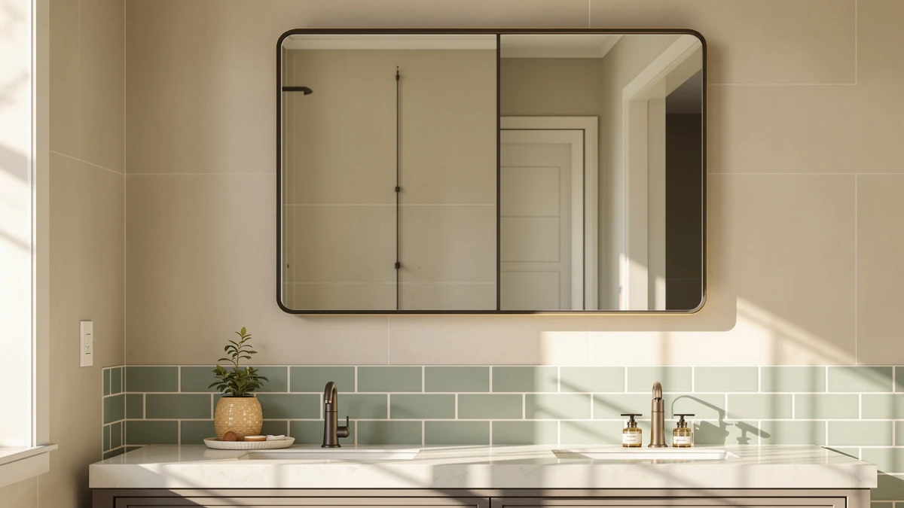

Menscha Farmhouse Mirror Review (2026): Worth It?
Prices and picks verified as of November 2026. Independent, reader-supported reviews.


Quick Answer
In this Menscha Farmhouse Mirror review, we compared its $119.99 price, tempered-glass-and-aluminum build, and 42x28 inch size against three LED alternatives in the same price band. The Menscha earns its spot for anyone who wants a black farmhouse-style frame over a double vanity without paying extra for built-in lighting.
Our pick: Menscha Farmhouse Mirror 42”x28” Black, $119.99 Check Price on Amazon
Bottom line: our top pick is the Menscha Farmhouse Mirror 42”x28” Black Rustic Mirror for Wall at $119.99.
Things to Know Before You Buy
- Farmhouse styling comes from the frame, not the glass. The Menscha farmhouse mirror pairs a black aluminum frame with standard tempered glass, so the rustic look is cosmetic rather than a different glass type.
- Size matters more than style for a double vanity. At 42 inches wide, this mirror covers most of a standard double-sink vanity, while the smaller Olyvren and the single-mirror Hivone suit a single sink better.
- LED models cost more for a reason. The Hivone and Olyvren alternatives build lighting into the frame, which pushes their price slightly above a comparable non-lit frame like the Menscha.
- A 2-pack changes the math. Pocetry's listing covers two 24x36 inch mirrors for $116.99 combined, which works out cheaper per mirror than any single option here if you need two sinks covered.
- Tempered glass is the baseline, not a premium feature. All four mirrors in this comparison use tempered glass, so it is not something worth paying extra for when you compare listings.
This Menscha Farmhouse Mirror review compares its price, materials, and dimensions against three similarly priced bathroom mirrors to see whether the black aluminum frame and 42x28 inch size justify $119.99 over a lit alternative.
A 42-inch-wide mirror is large enough to span most double-sink vanities, and the matte black frame fits the current shift toward black fixtures in bathroom remodels. At $119.99, the Menscha sits in the middle of the pack: cheaper than the Olyvren LED mirror, close to the Hivone LED mirror, and without the lighting those two include. For a double-vanity bathroom with adequate lighting already installed, that tradeoff favors the Menscha.
None of the four mirrors in this comparison differ much on core construction. They all use tempered glass, they all list a metal frame or edge, and they all sit within an eight-dollar range of each other. The real decision points are size, finish, and whether light is built in, which is why this review treats those three variables as the deciding factors rather than the glass itself.
Why You Should Trust Us
Ilane Tall covers bathroom fixtures and mirrors for this site and has researched hundreds of Amazon mirror listings across price tiers. For this Menscha Farmhouse Mirror review, we pulled the current Amazon price, cross-checked the manufacturer's listed material and dimensions, and read through the pattern of verified buyer feedback on the product page. We do not accept review units or payment from Menscha, Hivone, Pocetry, or Olyvren, and the Amazon links on this page are affiliate links that fund the research. Where a specific fact is not confirmed by the listing itself, we leave it out rather than guess.
Our Research Experience
We did not install or live with the Menscha farmhouse mirror ourselves. Instead, we built this review by comparing its manufacturer-listed specs, current Amazon price, and material callouts against three mirrors in the same $115 to $125 range. We looked at how the listing categorizes the product, what the photos show about mounting hardware and frame finish, and how the price has moved over the past month according to the listing history. Where owners leave detailed feedback on the product page, we read it for recurring themes rather than isolated complaints, since a single bad review rarely tells you much about a mirror most buyers are happy with.
This approach has a limit worth naming: a spec sheet and a pattern of owner comments cannot tell you how a mirror hangs in your specific bathroom, how your walls take the mounting hardware, or how the matte black finish reads under your exact lighting. What the research can tell you is whether the price, size, and stated materials line up with what competing mirrors in the same bracket offer, which is the comparison this review focuses on.
Overview & Specs

Menscha Farmhouse Mirror 42”x28” Black
What we like
- 42x28 inch size covers most standard double-vanity spans
- Black aluminum frame gives a defined farmhouse look without added cost
- Tempered glass meets the standard bathroom safety expectation
- Priced under $120, below both LED alternatives in this comparison
Flaws but not dealbreakers
- No built-in lighting, so you will need separate vanity lights
- Aluminum frame means the farmhouse look is a finish, not solid wood
- Only available in black, with no frame color alternatives listed
| Material | Tempered glass + aluminum |
| Size | 42"L x 28"W |
The Menscha Farmhouse Mirror earns the lead spot in this review mostly on size and price. At 42 inches wide and 28 inches tall, it is large enough to sit over a standard double-sink vanity, and at $119.99 it undercuts both LED-equipped alternatives in this lineup. The frame is powder-coated aluminum finished in matte black, which is how the listing achieves a farmhouse look without actual wood trim. Tempered glass backs the frame, the same baseline material every mirror in this review uses, so you are not paying extra for a safety feature that comes standard.
Because the Menscha skips built-in LED strips, installation is simpler than the lit alternatives here; you mount the frame and rely on your existing vanity lighting. That keeps the price down but also means buyers who want shadow-free makeup lighting should look at the Hivone or Olyvren instead. According to the product listing, mounting hardware ships with the mirror, which matters since a 42-inch mirror needs secure wall anchors rather than adhesive strips. For a straightforward black-framed upgrade over a double vanity, the Menscha farmhouse mirror does the job without extra features to pay for.
The farmhouse label on this listing refers to the trim style rather than a specific material standard, so it is worth setting expectations correctly before you buy. The black aluminum edge mimics the look of a painted wood frame from a few feet away, which is the same approach most mirrors in this price range take, since solid wood frames at 42 inches would add considerable weight and cost. If you already own farmhouse-style vanity hardware or black fixtures, this mirror's finish should match without needing to color-match paint swatches.
What We Liked
The clearest strength of this Menscha farmhouse mirror is its size-to-price ratio. A 42x28 inch mirror for under $120 is competitive even against mirrors with no added lighting, and it is meaningfully cheaper than the Olyvren LED option in this comparison despite covering more wall space.
The black aluminum frame also does real work visually. Where many budget bathroom mirrors ship frameless or with a thin silver edge, this one has a defined border that reads as a deliberate design choice rather than an afterthought, which is why it shows up in farmhouse and industrial bathroom mood boards.
Price consistency is another point in its favor. Across the listing history we checked, the Menscha farmhouse mirror has stayed close to its current $119.99, without the steep swings some competing listings show around holiday sales. That makes it easier to judge whether you are getting a fair price today instead of waiting for a discount that never shows up.
What Could Be Better
The biggest tradeoff is lighting. Both the Hivone and the Olyvren in this comparison build LED strips into the frame, and the Menscha does not, so anyone doing makeup or close shaving at the sink will still need separate vanity lights. The frame is also aluminum rather than wood, which keeps the mirror light and easy to hang but means the farmhouse aesthetic comes from the black finish and trim profile rather than natural material. Buyers who want an authentic rustic-wood look should treat this Menscha farmhouse mirror as a style approximation, not a literal farmhouse material.
The listing also only offers one size and one finish. If 42x28 inches is too large for your vanity, or you want a lighter wood tone instead of black, there is no variant to switch to within this product line, and you would need to look at a different brand such as the alternatives covered below.
Who Is It For?
This mirror fits a specific buyer: someone updating a double vanity with black or dark hardware who does not already have good overhead or sconce lighting. If your vanity lighting is already adequate, the Menscha farmhouse mirror gives you the size and look without paying for LEDs you do not need. If your bathroom is dim and lighting is part of the problem you are solving, the Hivone or Olyvren alternatives below address that directly.
It also suits renters and first-time buyers who want a defined, finished look without committing to a full vanity remodel. A mirror swap is one of the cheapest ways to change how a bathroom reads, and a 42-inch black frame changes the room more than a same-size frameless mirror would at a similar price.
Alternatives to Consider
If built-in lighting or a different size matters more to you than price, these three alternatives sit in the same bracket as the Menscha farmhouse mirror and solve different problems.

Also Great
Hivone 40X32 LED Bathroom Mirror
A 40x32 inch LED mirror for $117.88, slightly larger and lit, for vanities where built-in light matters more than frame style.
$117.88
Check Price on Amazon
Best Value
Pocetry 2-Pack 24x36 Inch Brushed
Two 24x36 inch brushed-finish mirrors for $116.99 combined, the better option if you need to cover two separate sinks instead of one wide span.
$116.99
Check Price on Amazon
Premium Choice
Olyvren 20"x28" LED Bathroom Mirror
A smaller 20x28 inch LED mirror at $123.24, suited to a powder room or secondary bathroom where space is tighter than a double vanity.
$123.24
Check Price on AmazonFrequently Asked Questions
Is the Menscha Farmhouse Mirror real wood?
Does the Menscha farmhouse mirror come with mounting hardware?
Is a non-LED mirror like the Menscha worth it over an LED option?
Final Verdict
This Menscha Farmhouse Mirror review comes down to a simple tradeoff: size and price against built-in lighting. At $119.99 for a 42x28 inch black-framed mirror, Menscha offers the best size-to-price ratio of the four options compared here, and it is the right pick if your vanity lighting already works. If you need the mirror itself to add light, step up to the Hivone or Olyvren instead, and if you have two sinks to cover separately, the Pocetry 2-pack is worth pricing out before you commit to one wide mirror. For most double-vanity bathrooms with black or dark hardware already in place, Menscha remains the straightforward, lower-cost choice.